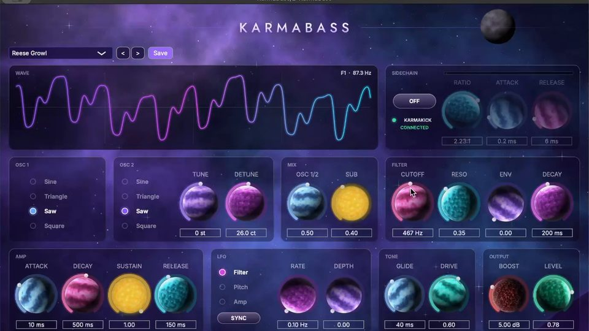
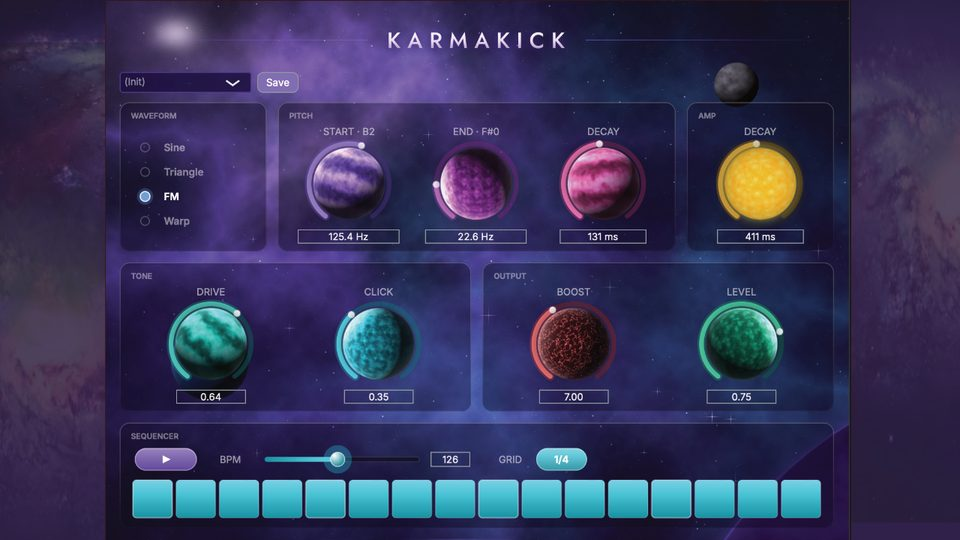
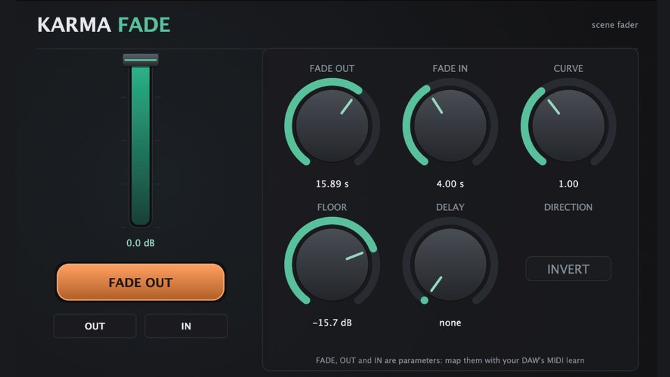
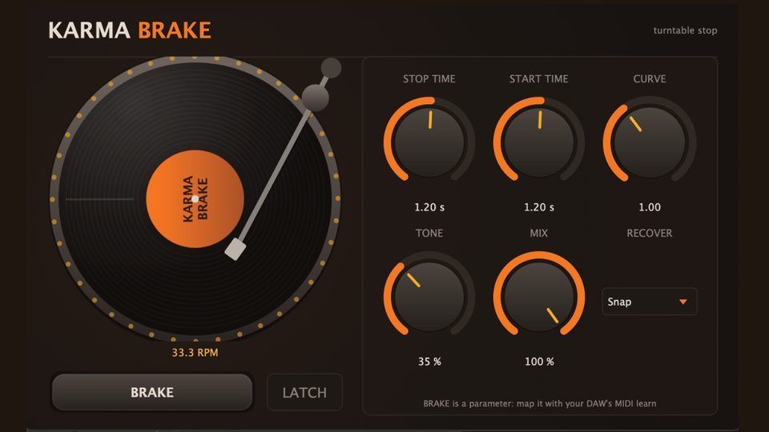

Live sets that hold up on stage, plugins that do one thing well, music finished to the last detail. Everything I build comes from twenty years of playing and mixing live.Live set che reggono sul palco, plugin che fanno bene una cosa, musica rifinita fino all'ultimo dettaglio. Tutto quello che costruisco viene da vent'anni passati a suonare e a mixare dal vivo.Livesets, auf die man sich auf der Bühne verlassen kann, Plugins, die eine Sache richtig gut machen, Musik, fertig bis ins letzte Detail. Alles, was ich baue, kommt aus zwanzig Jahren, in denen ich live gespielt und live gemischt habe.
From the first idea to the finished track. Techno, drum and bass, dub, hip hop, songs with vocals: I produced two albums from writing to mix. Here are four short excerpts.Dalla prima idea al brano finito. Techno, drum and bass, dub, hip hop, canzoni con la voce: ho prodotto due dischi dalla scrittura al mix. Qui sotto quattro estratti brevi.Von der ersten Idee bis zum fertigen Track. Techno, Drum and Bass, Dub, Hip-Hop, Songs mit Gesang: Ich habe zwei Alben produziert, vom Schreiben bis zum Mix. Hier sind vier kurze Ausschnitte.
Teknomadò · Different but not wrong · Viaggi paralleli · L'isola
You send me your stems. I send back an Ableton Live set you can open and play, the same every night. Ableton can be simple or very deep: I start from what you need and build the set that fits you.Mi mandi le tue tracce. Ti rimando un set Ableton da aprire e suonare, uguale ogni sera. Ableton può essere semplice o molto profondo: parto da quello che ti serve e costruisco il set che fa per te.Du schickst mir deine Stems. Ich schicke dir ein Ableton-Liveset zurück, das du öffnen und spielen kannst, jeden Abend gleich. Ableton kann einfach sein oder sehr tief gehen: Ich gehe von dem aus, was du brauchst, und baue das Set, das zu dir passt.
Ableton Live 12 Suite. Up to 5 songs per set, more on request.Ableton Live 12 Suite. Fino a 5 brani per set, di più su richiesta.Ableton Live 12 Suite. Bis zu 5 Songs pro Set, mehr auf Anfrage.
Few controls, one screen, no manual. VST3 and AU for Mac, VST3 for Windows, signed and tested. KarmaKick is free.Pochi controlli, una schermata, nessun manuale. VST3 e AU per Mac, VST3 per Windows, firmati e collaudati. KarmaKick è gratis.Wenige Regler, ein Fenster, kein Handbuch. VST3 und AU für Mac, VST3 für Windows, signiert und getestet. KarmaKick ist gratis.

Mono bass synth. Ducks under KarmaKick with one button, no routing.Synth di basso mono. Si abbassa sotto KarmaKick con un tasto, senza routing.Mono-Basssynth. Macht mit einem Knopf Platz für KarmaKick, ohne Routing.
€19
Kick drum synth. Few knobs, no manual.Synth di cassa. Poche manopole, nessun manuale.Kick-Synth. Wenige Regler, kein Handbuch.
FreeGratisGratis
Fade out on cue, with your hands full. Made for the stage.Sfuma al momento giusto, anche con le mani occupate. Pensato per il palco.Blendet genau im richtigen Moment aus, auch wenn du keine Hand frei hast. Gemacht für die Bühne.
€9
The turntable stop, as a plugin.La frenata del giradischi, in un plugin.Der Plattenspieler-Stopp als Plugin.
€9The tool you need doesn't exist? I build it. Written in JUCE and C++, VST3 and AU, Mac and Windows, tested in a real DAW before you get it.Lo strumento che ti serve non esiste? Lo costruisco. Scritto in JUCE e C++, VST3 e AU, Mac e Windows, provato in una DAW vera prima di arrivare a te.Das Werkzeug, das du brauchst, gibt es nicht? Ich baue es. Geschrieben in JUCE und C++, VST3 und AU, Mac und Windows, in einer echten DAW getestet, bevor es bei dir ankommt.